Wszyscy pamiętamy historie o piratach, wielkich skarbach i butelkach, które od czasu do czasu morze wyrzucało na brzeg. Tajemnicze butelki z listami zakochanych, mapami skarbów, najskrytszymi marzeniami, wołaniem o pomoc. Dziś i Ty możesz stworzyć wiadomość, która będzie czekać na znalazcę lub popłynie przez świat. Nigdy nie wiadomo kto ją znajdzie i jaki efekt wywoła.
.
MIAB, Wiadomość w butelce, jest aplikacją która umożliwia zostawianie wiadomości w różnych miejscach. Ktokolwiek chce odebrać taką wiadomość, musi znaleźć się w tym samym miejscu.
Żeby móc zostawiać, chować, rzucać, znajdywać butelki, potrzebny jest dostęp do internetu i dane GPS.
Zostawianie butelek
Zostawiona butelka, pozostaje w tym samym miejscu do momentu jej podniesienia przez kogoś.
W celu zostawienia butelki wybierz opcję "Zostaw butelkę" w głównym ekranie aplikacji. Napisz wiadomość, którą chcesz zostawić w butelce i naciśnij przycisk "Zostaw butelkę".
Rzucanie butelek
Rzucona butelka płynie przez świat do momentu jej podniesienia przez kogoś.
W celu rzucenia butelki wybierz opcję "Rzuć butelkę" w głównym ekranie aplikacji. Napisz wiadomość, którą chcesz rzucić w butelce i naciśnij przycisk "Rzuć butelkę".
Chowanie butelek
Schowana butelka, pozostaje w tym samym miejscu do momentu jej podniesienia przez kogoś.
W celu schowania butelki wybierz opcję "Schowaj butelkę" w głównym ekranie aplikacji. Napisz wiadomość, którą chcesz schować z butelką i naciśnij przycisk "Schowaj butelkę".
Szukanie butelek
Szukanie zostawionych i płynących butelek jest wykonane automatycznie przez aplikację. Kiedy szukanie butelek jest załączone wystarczy spacerować i program sam znajdzie butelki. Załączenie i wyłączenie szukania butelek wykonuje się przez naciśnięcie obrazka latarni morskiej w prawym górnym rogu ekranu:
 - szukanie butelek wyłączone.
- szukanie butelek włączone.
Włączone szukanie butelek można również poznać po ikonce butelki u góry ekranu.
Włączone szukanie butelek działa nawet gdy aplikacja jest niewidoczna na ekranie!
Szukanie ukrytych butelek
Aby znaleźć ukrytą butelkę (lub butelki) trzeba wybrać opcję "Szukaj ukrytych butelek" w głównym ekranie aplikacji. Szukanie ukrytych butelek zostanie wykonane tylko raz w obecnej lokalizacji. Aby poszukać ukrytych butelek w innym miejscu, trzeba ponownie wybrać opcję "Szukaj ukrytych butelek" w tym miejscu. Ten sposób szukania ukrytych butelek powoduje, że trudno je znaleźć, ponieważ w każdym miejscu trzeba poszukać ręcznie (wybrać opcję "Szukaj ukrytych butelek"). Dzięki takiemu rozwiązaniu, pomimo, iż każdy może znaleźć ukrytą butelkę, jest to bardzo niewygodne kiedy nie wiadomo gdzie szukać.
Znalezione butelki
Znalezione butelki można obejrzeć po wybraniu opcji "Znalezione butelki" w głównym ekranie aplikacji. Naciśnij butelkę, żeby przeczytać wiadomość, którą zawiera.
Usuwanie znalezionych butelek
W celu usunięcia znalezionej butelki, naciśnij ją i przytrzymaj chwilę. Z menu opcji wybierz "Usuń butelkę". Raz usuniętej butelki nie można odzyskać.
- Czy mogę zniszczyć stworzoną butelkę?
Nie. Każda butelka może zostać znaleziona tylko raz, więc jeśli pierwszy(a) ją znajdziesz to nikt inny jej nie zobaczy.
- Ilu ludzi może otrzymać moją wiadomość w butelce?
Każda butelka może zostać znaleziona tylko raz.
- Jak długo moja butelka może być "aktywna"?
Zostawiona butelka istnieje dopóki ktoś jej nie znajdzie.
- Jaka jest różnica pomiędzy zostawioną a schowaną butelką?
Zostawione butelki są automatycznie znajdywane przez aplikację, gdy opcja szukania butelek jest aktywna.
Ukryte butelki mogą zostać znalezione tylko w wyniku użycia opcji "Szukaj ukrytych butelek". Użycie opcji "Szukaj ukrytych butelek" działa jednorazowo w danym miejscu. Przeszukanie większego obszaru oznacza bardzo częste wybieranie tej opcji co jest niewygodne. Dlatego ukryte wiadomości są bardzo trudne do znalezienia, jeśli nie wiadomo gdzie szukać.
- Czy wiadomo kto zostawił daną butelkę?
Nie. W momencie zostawienia, rzucenia lub ukrycia butelki traci ona wszelkie powiązanie do jej twórcy w naszej bazie danych. Jeżeli ktoś chce to może napisać w treści wiadomości swoje imię, nazwisko, email, nazwę z facebooka, G+ itp.
- Czy mogę śledzić swoją wiadomość?
Nie. W momencie zostawienia, rzucenia lub ukrycia butelki traci ona wszelkie powiązanie do jej twórcy w naszej bazie danych, dlatego nie można jej śledzić.
- Jaki jest kierunek i prędkość przemieszczania się rzuconej butelki?
Prędkość i kierunek rzuconej butelki są losowo generowane w momencie rzutu.
- Czy wiadomości w butelkach są zakodowane?
Nie.
- Czy można używać tej aplikacji w budynkach?
Ogólnie tak. Dokładność systemu GPS w budynkach jest bardzo niska (jeśli nie zerowa), dlatego też, może się okazać niemożliwe zostawienie/znalezienie butelki w budynku.
- Dlaczego muszę mieć załączony GPS?
Dane lokalizacyjne są potrzebne dla poprawnego zostawienia butelki. Również w trakcie szukania butelki potrzebna jest informacja o obecnej lokalizacji. Dane GPS nie są wykorzystywane w innych celach.
- Zostawiłem wiadomość i następnego dnia nie mogę jej znaleźć w tym samym miejscu. Dlaczego?
Po pierwsze, ktoś inny mógł już znaleźć tą wiadomość. Po drugie, pomimo faktu, iż staramy się używać najlepszych technik zbierania danych GPS, dokładność systemu GPS zależy od wielu czynników, takich jak: pogoda, użyty sprzęt, wersja systemu itd. Niestety wpływa to na dokładną pozycję zostawiania/chowania butelek. Proszę spróbować poszukać butelki na obszarze o promieniu do 10 metrów od miejsca jej zostawienia.
- Każdy może używać tej aplikacji za darmo, pod warunkiem przestrzegania tej licencji.
- Twórca aplikacji dołożył wszelkich starań aby była ona jak najmniej wadliwa jednak nie daje żadnych gwarancji poprawnego działania. Każdy używa tej aplikacji na własne ryzyko.
- Zabronione jest używanie tej aplikacji dla celów niezgodnych z prawem.
- Zabronione jest używanie tej aplikacji dla szerzenia nienawiści, rasizmu i podobnych idei.